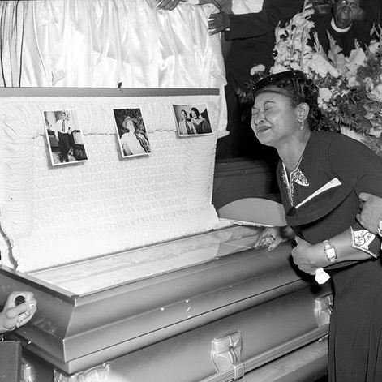

Timeline photos
This is a famous picture of Emmet Till’s mother crying over her lynched son’s bloated, dead body.
Carolyn Bryant Donham was the White woman who lied about Emmett grabbing her and being menacing and sexually crude toward her.
You can Google the phrase “Sage Lewis sex trafficking” and see my picture and read the entire salacious Beacon Journal story titled, “Summit County Sheriff's Office investigating human trafficking reports at Akron tent city”
That raid on our camp was over a year ago (June 2022). While they hauled away 13 people on unrelated warrants, nothing ever came of it. IT WAS ALL A LIE.
I know it was a lie because this entire year the police would casually tell me that they were hearing rumors of woman being trapped in cages in my house, under some trapped door.
Finally, because my friend (Black) Hermaine was gunned down on my property, they couldn’t stand it any more. They had to look. And guess what: no cages. No trapped doors. Nothing.
It was just the lies of a White woman on one Black man. She would connect me to it whenever it was convenient.
I’ve broached this subject in the comments of another post. Of course I was called a misogynist.
If we want to have a real discussion about racism in America, we have to look at all of it. My communist friends like to pile all the racism at the feet of the police. But so often they are just the middle men.
White women have a long history of using White fear of Black men to wield incredible power. How many innocent Black men have been murdered or jailed because a White woman lied about them. I mean who are you going to believe? That sweet, innocent White girl or that terrifying Black man? And if the Black man has any record at all, forget about it. He’s done.
Now I’ve forced a Black man into the streets with nowhere to go because of a lie. The police want the housing inspector to come into my house which could ultimately get the entire thing condemned which could make another Black man homeless.
All those people, mostly Black, jailed on outstanding warrants a year ago. The immediate closure of our camp. The untold reputation destruction of our work.
All because of lies of one White woman.